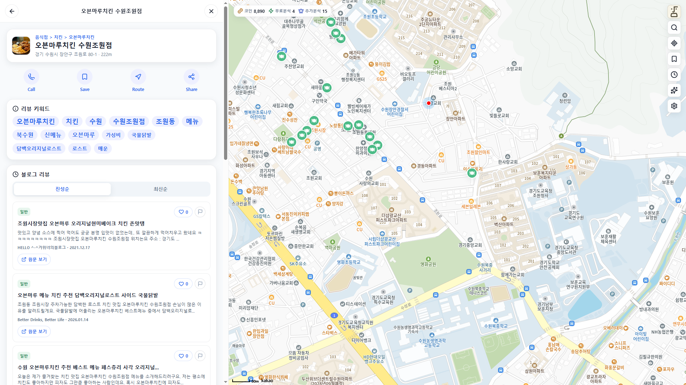
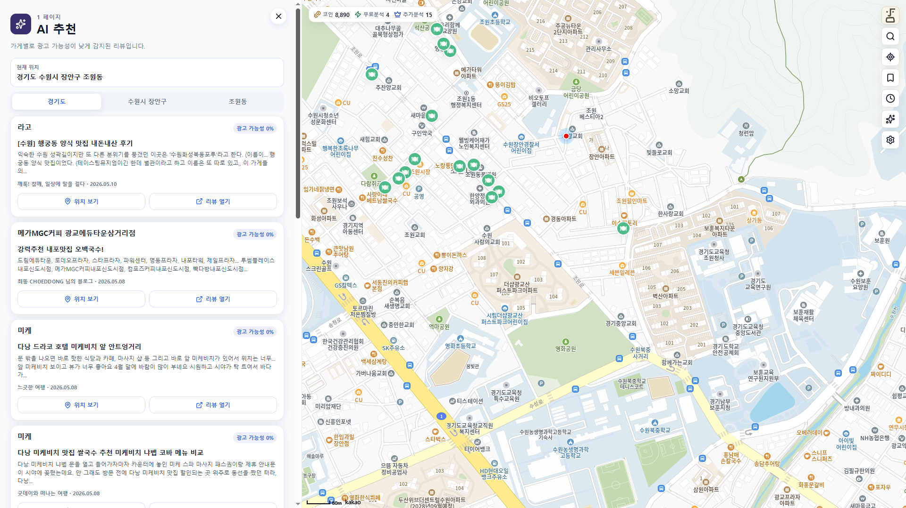

AI 리뷰 진위 판별 서비스 · 4인 팀 · 4주
진실의 입
The Truth Filtering Engine
네이버 블로그 리뷰의 광고성을 ELECTRA 계열 한국어 분류 모델로 판별해, 신뢰할 수 있는 리뷰만 보여주는 지도 기반 서비스.
최현석 — 팀 리드 · 프론트엔드(React·Flutter) · AI 결과의 서비스 통합
React 19
TypeScript
Vite
Flutter
Riverpod
FastAPI
ELECTRA · PyTorch
Supabase
Kakao Maps
Naver Blog API
SSE
의사결정 시간
15–20분
→
5분
한 끼 결정까지 걸리는 시간 약 70%↓
모델 성능
0.84
AUC
Recall 0.96 — 광고를 거의 놓치지 않음
출시 범위
4주
웹 + 앱 + 모델 + 백엔드 풀스택 출시
01 — Problem
맛집 하나 고르는 데
평균 15–20분, 광고가 후기를 오염시킨다
블로그 리뷰는 유용하지만 광고성 글과 실제 방문 후기가 섞여 있다. 사용자는 리뷰를 하나하나 열어 진위를 직접 판단해야 한다.
22,011건
공정위 2024 뒷광고 의심 게시물
소비자가 리뷰를 보고도 선택에 실패한 경험이 있다
단순 키워드 규칙으로는 잡히지 않는다
"강력 추천"
은 진짜 후기에도, 광고에도 똑같이 등장한다 — 표현이 아니라 문맥을 읽어야 한다
기존 한계 ①
대가성 고지 은폐
협찬 문구가 드러나지 않는 자연스러운 홍보 글
기존 한계 ②
신뢰도 판단 기능 부재
기존 지도 서비스엔 진위 신호 자체가 없다
기존 한계 ③
반복 홍보 문구 오염
같은 홍보 문구가 검색 결과를 뒤덮는다
02 — Solution
탐색 흐름을 깨지 않고
신뢰할 수 있는 리뷰를 먼저 보여준다
탐색
→
매장 선택
→
AI 분석 (캐시 or SSE)
→
신뢰도순 정렬·확인
→
의사결정
AI 광고 탐지
리뷰별 광고 가능성 점수·등급
truth-filtering-engine-web.vercel.app

React 웹 — 지도 + 상세 분석 패널 / 진성순 정렬
03 — ML Engineering
팀 성과 · 내가 이해·조율한 부분
성능 붕괴를 진단하고
재학습으로 일반화 성능을 회복하다
아래 ML 딥다이브는 팀의 성과입니다. 모델 학습은 팀이 주도했고, 저는 문제 진단·실험 결과·임계값 정책을 함께 이해하고 그 결과를 서비스에 연결하는 작업을 담당했습니다.
문제 발견 — 성능 붕괴
신규 데이터에서 거의 랜덤 수준까지 하락 — 운영 환경 일반화 실패 신호
원인 진단 — 상호명 편향
학습 데이터 편중 + 상호명(가게명) 편향. 모델이 문맥이 아니라 가게 이름에 반응한다는 가설.
마스킹 실험 입증 — 새 가게 AUC
+0.0469
AUC 추이 — 붕괴에서 회복까지
y축 = AUC (0–1)
해결 — 마스킹 + 데이터 확장 + 입력 재설계
데이터 건수 +58%
1,360 → 2,142
입력 결합
제목 [SEP] 본문
짧은 제목과 본문 preview를 함께 입력
INT8
양자화에도 성능 유지
경량 추론 적용
임계값 최적화
Youden's J 기준으로 분류 임계값 0.778 선정 — precision·recall 균형점.
0 · 비광고광고 · 1
해석가능성 (SHAP)
광고
격식체 · 홍보성 표현 · 업주 시점
비광고
1인칭 · 역접 · 구어체
04 — My Contribution
내가 직접 한 일
AI 분석 결과를
작동하는 서비스로 연결했다
팀 4인 프로젝트에서 제가 직접 책임진 영역을 명확히 구분해 정리했습니다. 핵심 기여는 AI 분석 결과를 웹·앱 서비스에 통합한 영역, 프론트엔드 구현, 그리고 팀 리드입니다.
A
AI 결과의 서비스 통합
AIEngineer.md §10
캐시 우선 조회
→
없으면 SSE 스트림 요청
→
배치 도착마다 목록 병합
→
사용량 반영
광고 점수를 절대 판정이 아닌 "참고 점수·등급"으로 설계해, 신뢰도순 정렬과 AI 추천에 연결했다.
B
프론트엔드 구현
Frontend.md
React 19 + TS 웹 초기 구축 — App.tsx에서 전체 화면 흐름 조율, hook 단위로 상태 분리.
웹·앱 기능 정합성 유지 — tokens.json 기반 웹 CSS와 Flutter 디자인 시스템 통일.
낙관적 업데이트 북마크 — 서버 실패 시 토스트로 롤백 피드백.
사용량 기반 CTA 계산 — 무료·프리미엄·코인 상태에 따라 버튼 라벨 결정.
useMap
useDetail
useBookmarks
useReviewActivity
C
트러블슈팅
실제 내가 처리한 상태 꼬임
지도 idle 이벤트 API 과호출
useMap에서 검색 모드를 분리해 viewport 자동 검색이 선택 결과를 덮지 않도록 제어.
상세 분석 요청 경쟁 상태
AbortController + requestId로 늦게 도착한 오래된 응답을 무시.
캐시·스트리밍 병합 중복 리뷰
URL/ID 기준 dedupe 후 정렬·페이지를 병합 목록 기준으로 재계산.
웹/앱 기능 정합성
공통 API 응답 모델을 기준으로 hook/provider를 분리해 플랫폼별 UI만 다르게.
D
팀 리드
문제 정의 · 스코핑 · 역할 조율
AI 추천 — 광고 가능성 낮은 리뷰 기반

참고 점수를 추천·정렬에 연결한 결과 화면
05 — Architecture
아키텍처 & 기술 선택 이유
→
→
→
ELECTRA 추론 PyTorch / HF
Naver Blog API 리뷰 수집
Supabase 캐시 · 점수 저장
추론 파이프라인
preprocess
→
tokenizer
→
ELECTRA
→
softmax
→
광고 점수 저장
preprocess = HTML 제거 · 상호명/브랜드명 마스킹 · 제목 [SEP] 본문 결합
React
웹 유입·공유 링크 대응이 쉬운 표준 웹 클라이언트.
Flutter
직접 렌더링으로 지도·리스트 스크롤 성능 확보.
SSE
최대 20초 분석 지연을 배치 단위로 끊어 체감 대기 시간 단축.
추론 최적화
모델 1회 로딩 · 배치 추론 · Supabase 캐싱으로 반복 추론 제거.
솔직한 한계
Cloudflare Quick Tunnel은 SSE 미지원 → 정식 Tunnel / Workers 전환 예정.
모델 파일 부재 시 점수 0.0 fallback으로 탐색 기능은 유지.
06 — Retrospective
회고 & 향후 개선
배운 점
- 외부 API(Naver·Kakao)를 실제 제품 흐름에 안정적으로 묶는 법
- React·Flutter 크로스플랫폼 UX를 토큰 기준으로 통일하는 법
- AI 결과를 절대 판정이 아닌 참고 신호로 제품에 통합하는 설계
향후 개선
- 클라우드 서버 이전 · Supabase RLS 강화 · 결제 페이지
- React Query 캐시 도입으로 상태 정리
- 판단 근거(키워드 하이라이트) 설명 UI
- 오탐/미탐 수집 기반 재학습 모니터링 루프